Patrick
Patrick Bateman
playlists
1,552
favoritos
6,101
comentários
50
Faixas recentes
True Faith
New Order
5:29
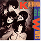
Walking on Sunshine
Katrina and the Waves
3:52
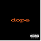
You Spin Me Round
Dope
3:25
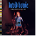
Something in the Air
David Bowie
4:46
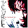
Watching Me Fall
The Cure
3:55
In Too Deep
Genesis
4:15
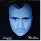
Sussudio
Phil Collins
5:34
The Greatest Love of All
Whitney Houston
3:51
Trouble
Daniel Ash
3:54
What’s on your Mind
Information Society
3:54
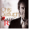
Lady in Red
Lady in Red
4:27
Playlists favoritas
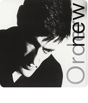
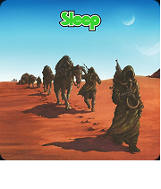
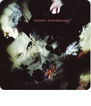
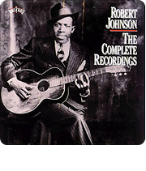
Artistas mais tocados
Últimos 30 dias
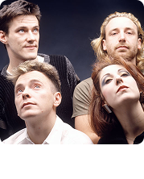
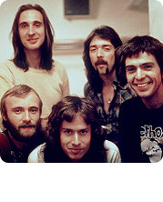
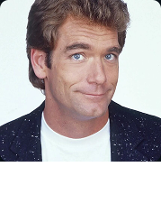
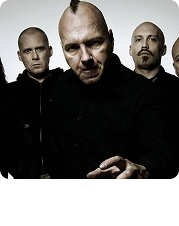
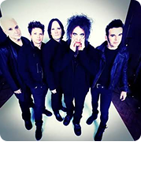
Últimas avaliações
Patrick
Os primeiros trabalhos deles foram um pouco novos para o meu gosto, mas quando Sports foi lançado em 83, acho que eles realmente se destacaram, comercial e artisticamente.
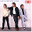
Hip to be Square
Huey Lewis & The News
4:27
Patrick
Foi em Duke que a presença de Phil Collins se tornou mais evidente. Acho que Invisible Touch foi a obra-prima indiscutível do grupo.
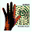
Invisible Touch
Genesis
4:27